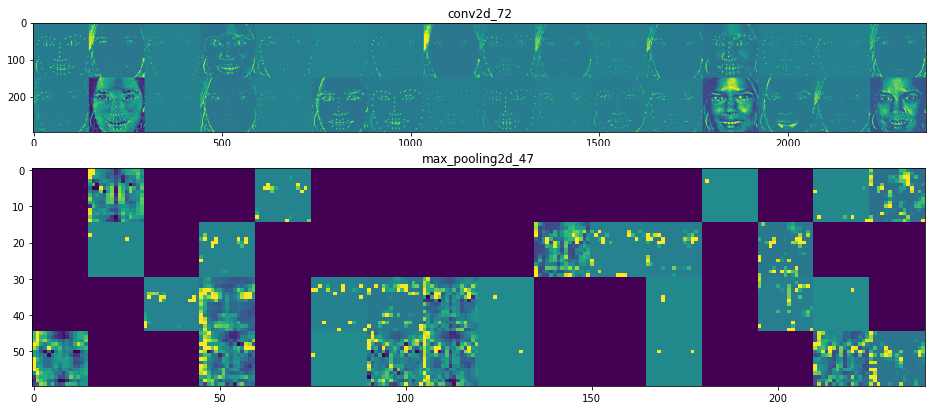

This picture shows what the first and the last convolutional layer detect when a network is feeded with a picture of a person.
For two weeks my two colleagues and I have been working on a group project, whose goal is to compare the performance of different algorithms in face recognition. We are focused on SVMs with different kernels and convnets. One more goal is to use data augmentation and transfer learning methods to train a network even on a very small data set. Our final goal is to check network vulnerability by incorporating the adversarial machine learning techniques.